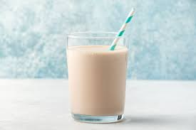

Protein Shake

Discription
Delicious shake with a great source of protein that can be enjoyed after a great workout. Protein powder and fruit can be switched out to your preference!
Ingredients
- Greek yogurt (Flavor is up to you but I prefer Vanilla)
- Blueberries
- Banana
- Milk
- Protein Powder
Directions
- Add Banana and blue berries to blender
- Mix in one or two scoops of protein poweder
- add yogurt and milk
- Blend ingredients for 30-45 seconds
- Pour and enjoy !!